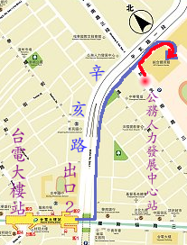

地點：台大綜合體育館二樓，位於新生南路、辛亥路口。 公車：公務人力發展中心站，公車路線： 0南、 0南 (區間車)、 109、 207、 253、 280、 280(直達車)、 284、 284(直行)、 290、 311(永福)、 505、 52、 642、 643、 668、 671、 675、 676、 907、 松江幹線、 敦化幹線、 綠11、 綠13， 可參考台北市大眾運輸公車路線查詢系統。 捷運：綠線，台電大樓站下車，從二號出口出來，沿辛亥路步行約十分鐘可達，見地圖。 開車：台大綜合體育館地下室有付費停車場。 
|